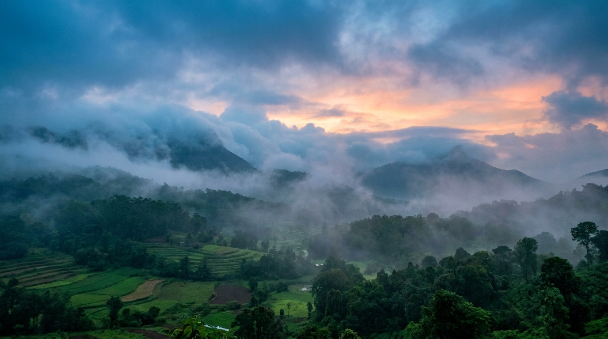
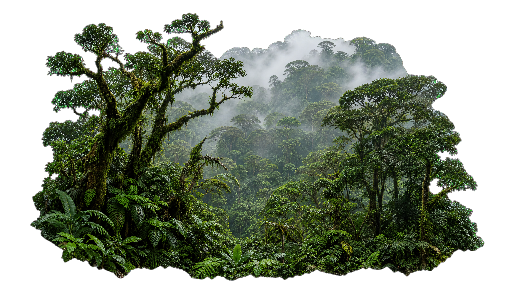
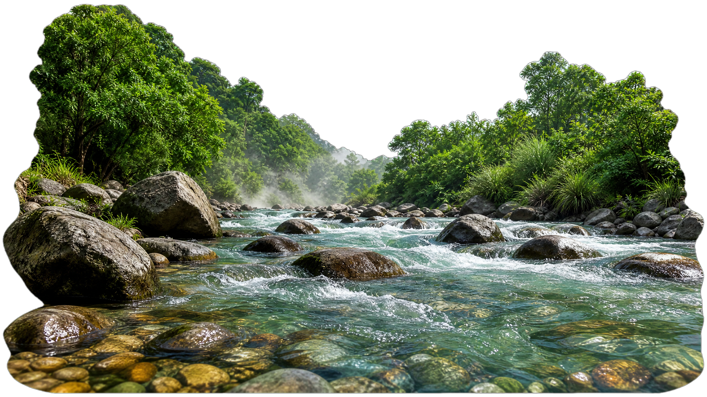
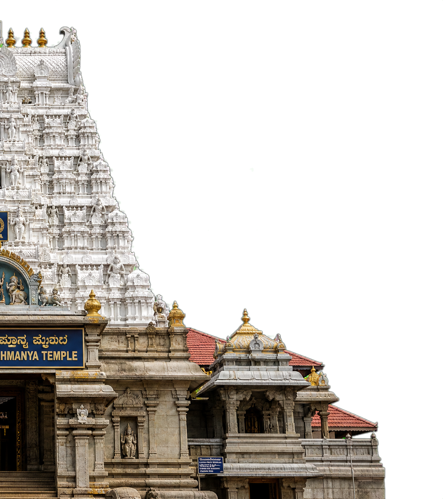
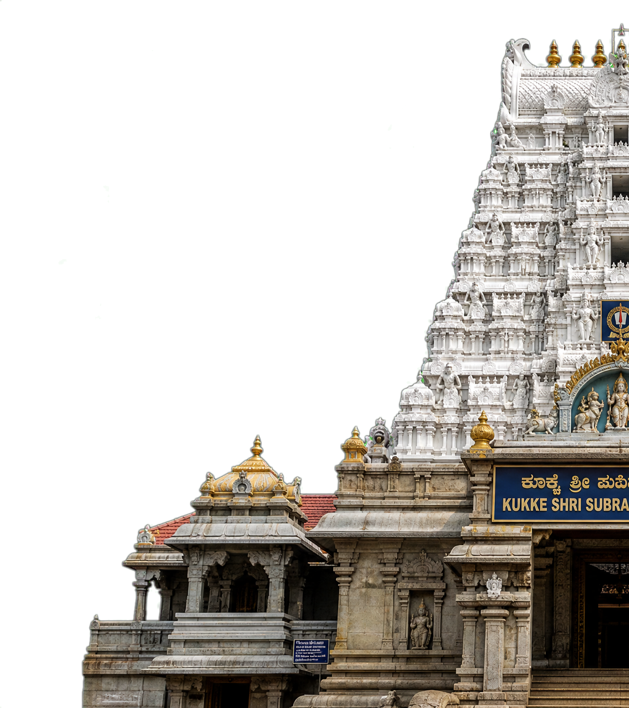
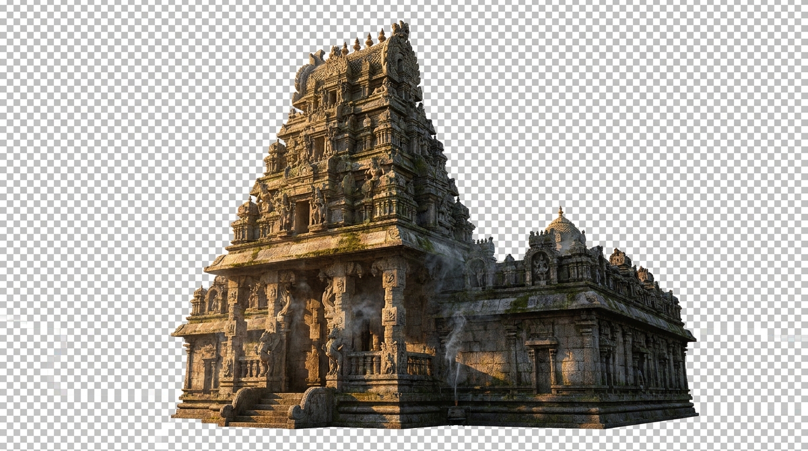

Kukke Subramanya Temple
One of India’s most sacred temples dedicated to Lord Subramanya.






Ancient temples, sacred rivers, and mist-covered forests create one of India’s most peaceful pilgrimage destinations.
The Kukke Subramanya Temple has welcomed pilgrims for centuries, surrounded by sacred forests, rivers, and traditions devoted to Lord Subramanya.
Dense rainforest, sacred waters, mountain trails, and timeless village life lie just beyond the temple.